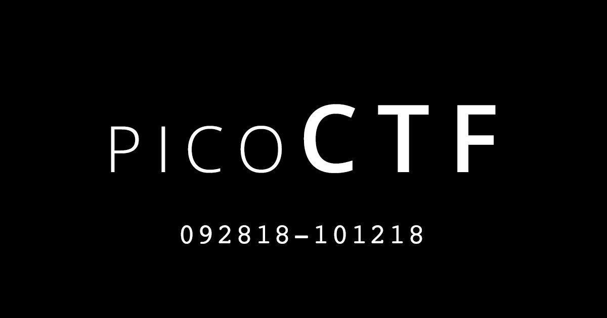
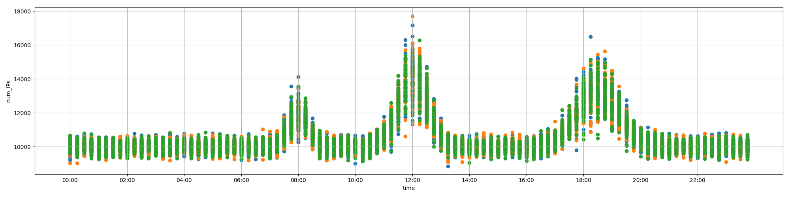

picoCTF 2018 - Forensics
jq zsteg steganography foremost pcap xxd exiftool stegsolve convert tesseract python-PIL magic-header ext pwn DNS
forensics-warmup-001
We download a zipfile with the command curl -Ok url. The -k switch allows to by-pass ssl certificates checking when downloading a file in TLS (with https).
we first check the zipfile with the command file: it’s indeed effectively a zip so we can unzip and explore the content.
Apparently there is an image, we open it with eog and we can observe the flag
|
|
forensics-warmup-002
We download a png file that we are not able to open with the command eog. There is obviously soething wrong about this file that requires us to investigate with forensics tool. We first do some reconnaissance on the file itself with the command file which informs us that the fyle type is not a png but a jepg file. Simply changing the extension to jpg solves our problem.
|
|
desrouleaux
The user connect with netcat nc on a remote shell and is then prompted to answer a set of multiple questions with a time constraint. Once the user has answered all the questions correctly, he obtains the flag; however upon wrong answer or timeout, he is being kicked-out of the shell and has to re-iterate the process.
All 4 questions are based on the exploration of a json file cat incidents.json
My first approach was to script all the answer, but then I realise that questions are sometime changing, and therefore make it a bit more tricky to copy-paste valid answer.
While I could have scripted using regex extraction, I chose instead a second approach that leverages the command jq followed by copy-paste:
|
|
reading-between-the-eyes

We download a beautiful husky picture but the flag is hidden somewhere in this image so we have to leverage some forensics tools.
We assume this is a steganography challenge, so we first try to solve this challenge by simply leveraging zsteg command. This command tries basic and common steganography algorithm for us:
|
|
recovering-from-the-snap
we download a block device dump file animals.dd. We create a folder to mount the file
mkdir mnt; mount animals.dd mnt; ls mnt
It contains several images but none of them contains an obvious flag.
Before we investigate each image independently, we want to look whether some images have been deleted from the block device
because we know that following the rm command, files are still recoverable unless the disk allocated space has been over-written.
We use foremost animals.dd, and indeed a folder output/jpg/ is created and contains deleted images we could recover.
One of the recovered image contains the flag.
admin-panel
We download a network packet capture file data.pcap which we can open using wireshark. From wireshark, we observe couple of HTTP POST /login requests. We simply leverages the wireshark “Follow tcp stream” on the second POST /login to observe the login password which actually is the flag
hex-editor
{kind=link}
We download a cat image that hides a flag. The hint is to used a command such as xxd hexedit bvi. Why a cat image? porbably another hint to pipe a cat command with xxd … Indeed, the flag is right at the end.
|
|
truly-an-artist

{kind=link}
We have a download link called “Meta material” pointing to an image 2018.png which apparently contains a flag. However this is just diversion. The image url name “meta-material”, makes us suspect we have to look for meta-information embedded in the file instead of the file data itself.
We will use exiftool or zsteg to extract meta-information
|
|
Another useful tool is zsteg which can be downloaded from git
|
|
now-you-dont
- nowYouDont.png –> This image is apparently filled with plain red, but what the eyes can’t see, the computer can.
- stegsolve git repo
{kind=link}
The hint is:
Is it really all one shade of red?
To tackle this challenge, we figure out stegsolve can help us get the flag lazily.
Another approach is to create a plain monochramatic red image and then substract it from the original image to get the difference.
The result should contain only pixels with a different color shade then the plain monochromatic image.
|
|
Another approach is to use PIL python image library
|
|
ext-super-magic
We download a filesystem image file ext-super-magic.img which appears to be corrupted as the file commande cannot identify the filesystem file:
|
|
Hints are provided here: if you are using a Linux/Mac OS X/Unix system, you can use the file command to determine the file type based upon the file signature, per the system’s magic file.
Googling “ext2 magic number”, we found this resource:
For example, an ext2/ext3/ext4 filesystem always has the bytes 0x53 0xEF at positions 1080–1081.
So theoretically we just have to patch bytes 1080-1081 with value 0x53EF to have our file being recognized as Ext filesystem
We can use xxd to swiftly patch manually the file:
|
|
Alternatively, we can use python pwn library in a file patch.py
|
|
lying-out

You’ll need to consult the file traffic.png to answer the following questions:
{kind=link}
Which of these logs have significantly higher traffic than is usual for their time of day?
You can see usual traffic on the attached plot. There may be multiple logs with higher than usual traffic,
so answer all of them! Give your answer as a list of `log_ID` values separated by spaces.
For example, if you want to answer that logs 2 and 7 are the ones with higher than usual traffic, type 2 7.
table:
log_ID time num_IPs
0 0 00:15:00 9786
1 1 02:00:00 10235
2 2 02:15:00 11594
3 3 03:30:00 9685
4 4 04:30:00 9992
5 5 05:15:00 10005
6 6 05:45:00 11642
7 7 06:30:00 10151
8 8 08:45:00 10326
9 9 10:45:00 10176
10 10 15:30:00 11620
11 11 15:45:00 10163
12 12 16:30:00 11707
13 13 19:30:00 11847
2 6 10 12
Correct!
whats-my-name
Some Hints, points us to investigate DNS protocol in the above pcap file
Opening the file with wireshark, we can then use the dnsserver filter to get rid of all other protocols. Remain two DNS messages; one of them contains the flag in cleartext
we could have just used the strings command but it is interesting